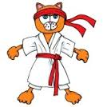
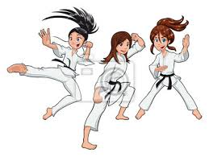
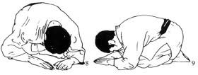
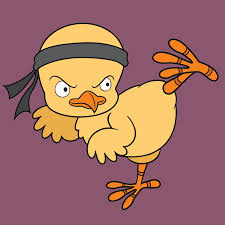
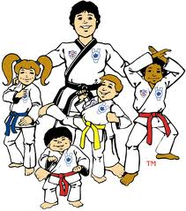
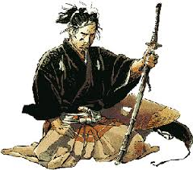
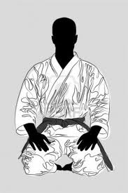
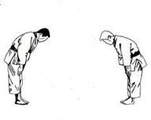
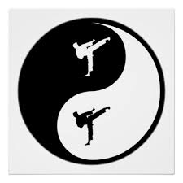

Code Moral du Karatéka
L'HONNEUR : MEiYO
L'honneur conditionne notre attitude et notre manière d'être vis à vis des autres. C'est la qualité essentielle. Nul ne peut se prétendre Budoka (guerrier au sens noble du terme) s'il n'a pas une conduite honorable. Du sens de l'honneur découlent toutes les autres vertus. Il exige le respect du code moral et la poursuite d'un idéal, de manière à toujours avoir un comportement digne et respectable.
LA FIDELITE : CHUJITSU
Il n'y a pas d'honneur sans fidélité et loyauté à l'égard de certains idéaux et de ceux qui les partagent. La fidélité symbolise la nécessité incontournable de tenir ses promesses et remplir ses engagements. La fidélité nécessite la sincérité dans les paroles et dans les actes.
LA SINCERITE : MAKOTO
Lors du salut du karatéka,, vous exprimez cette sincérité. Le mensonge et l'équivoque engendrent la suspicion qui est la source de toutes les désunions. Dans les arts martiaux, le salut est l'expression de cette sincérité, c'est le signe de celui qui ne déguise ni ses sentiments, ni ses pensées de celui qui sait être authentique.
LE COURAGE : YÜKI
La force d'âme qui fait braver le danger et la souffrance s'appelle le courage. Ce courage qui nous pousse à faire respecter ce qui nous paraît juste et qui nous permet malgré nos peurs et nos craintes d'affronter toutes les épreuves. La bravoure, l'ardeur et surtout la volonté sont les supports du courage.
LA BONTE ET LA BIENVEILLANCE : SHINSETSU
La bonté est une marque de courage qui dénote une haute humanité. Elle nous pousse à l'entraide, à être attentif à notre prochain et à notre environnement à être respectueux de la vie.
LA MODESTIE ET L'HUMILITE : KYOKEN
Si le budoka devient l'ambassadeur du code moral, il se doit de rester humble et ne pas flatter son égo. La bonté et la bienveillance ne peuvent s'exprimer sincèrement sans modération dans l'appréciation de soi-même. Savoir être humble, exempt d'orgueil et de vanité est le seul garant de la modestie.
LA DROITURE : TADASHI
C'est suivre la ligne du devoir sans jamais s'en écarter. Loyauté, honneteté et sincérité sont les piliers de cette droiture. Elles nous permettent de prendre sans aucune faiblesse une décision juste et raisonnable. La droiture engendre le respect à l'égard des autres et de la part des autres. La politesse est l'expression de ce respect dû à autrui.
LE RESPECT : SONCHOO
La droiture engendre le respect à l'égard des autres et de la part des autres. Quelques que soient ses qualiés, ses faiblesses ou sa position sociale savoir traiter les personnes et les choses avec déférence et respecter le sacré est le premier devoir d'un Budoka car cela permet d'éviter de nombreuses querelles et conflits.
LE CONTROLE DE SOI : SEIGYO
Cela doit être la qualité essentielle de toute ceinture noire. Il représente la possibilité de maîtriser nos sentiments, nos pulsions et de contrôler notre instinct. C'est l'un des principaux objectifs dans la pratique des arts martiaux car il conditionne toute notre efficacité. Il représente la faculté de toute ceinture noire à maîtriser n'importe quelle situation et maîtriser son instinct. Une grande partie de l'apprentissage du karaté est basé sur cette vertu.